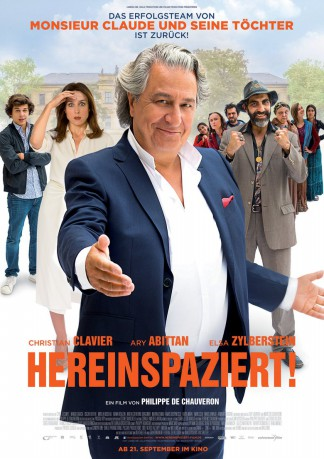

#8104 Hereinspaziert!
 
 IMDB-Wertung: 5.4 / 10
IMDB-Wertung: 5.4 / 10  Metascore: 0
Metascore: 0 
Der wohlhabende Intellektuelle und Autor Jean-Etienne Fougerole (Christian Clavier) hat gerade ein neues Buch geschrieben, in dem er die französische Elite dazu auffordert, ärmere und obdachlose Leute in ihre luxuriösen Wohnungen aufzunehmen. Bei einer Fernsehdebatte im Zuge der Promotion dieses neuesten Buches wird Jean-Etienne jedoch von einem der Gäste dazu herausgefordert, selbst mit gutem Beispiel voranzugehen. Um nicht das Gesicht zu verlieren, stimmt Jean-Etienne notgedrungen zu. Und so nimmt er gemeinsam mit seiner Frau, der Künstlerin Daphné (Elsa Zylberstein), eine vielköpfige Roma-Familie um Patriarch Babik (Ary Abittan) bei sich auf, die es sich mitsamt Wohnwagen und Hausschwein im weitläufigen Garten der Fougeroles gemütlich macht. Da ist das Chaos natürlich vorprogrammiert…
Jahr: 2017
Dauer: 92 Minuten
FSK:
Land: Frankreich Studio: Universum FilmTonspuren:
Untertitel:
Auflösung: 1080p (1920x1040) Größe: 5150 MB
Genre: Komödie
Regisseur: Philippe de Chauveron
Drehbuch: Guy Laurent
Soundtrack: Hervé Rakotofiringa
Darsteller:
 Christian Clavier als Jean-Etienne Fougerole
Christian Clavier als Jean-Etienne Fougerole Elsa Zylberstein als Daphné Fougerole
Elsa Zylberstein als Daphné Fougerole- Mirela Nicolau als Simza
- Marc Arnaud als Clément Barzach
- Ary Abittan als Babik
- Cyril Lecomte als Erwan Berruto
- Nanou Garcia als Isabelle Cheroy
- Oscar Berthe als Lionel Fougerole
- Sofiia Manousha als Fidélia Martinez
- Ioana Visalon als Somerta
- Marian Samu als Piti
- Anaïs Dopinescu als Renata
- Nikita Dragomir als Lulughia
- Raisa Mihai als Fernanda
- Inan Cicek als Crouch
- Armen Georgian als Ravi
- Camille Fernandez-Desandes als
Datei: X:\2017(G-M)\Hereinspaziert! (2017, FSK, 1920x1040).mkv seit 24.01.2018
Festplatte: HD 2017(A-Z)-2018(A-F)
 Es gibt insgesamt 148 Filme in der Gruppe '2017(G-M)'
Es gibt insgesamt 148 Filme in der Gruppe '2017(G-M)'